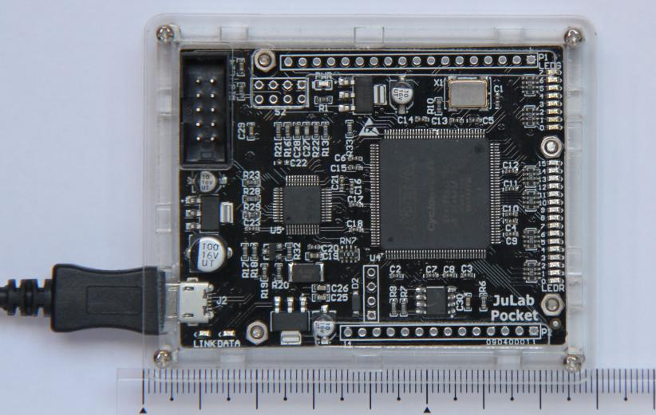
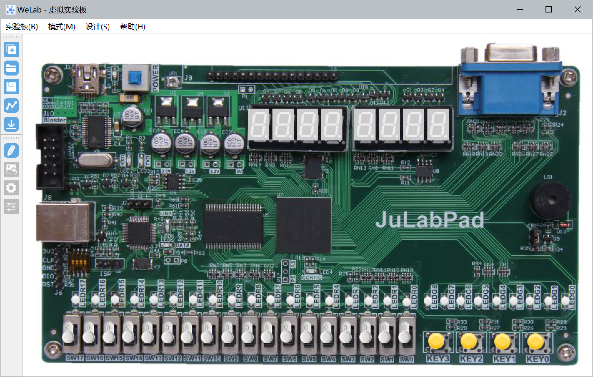
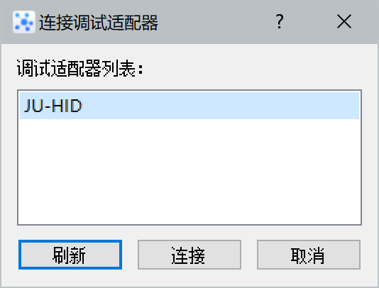
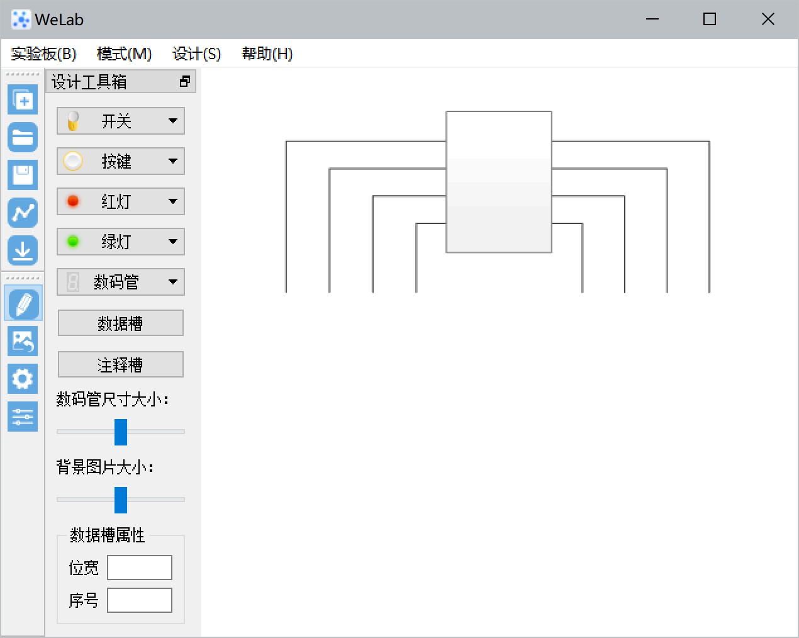
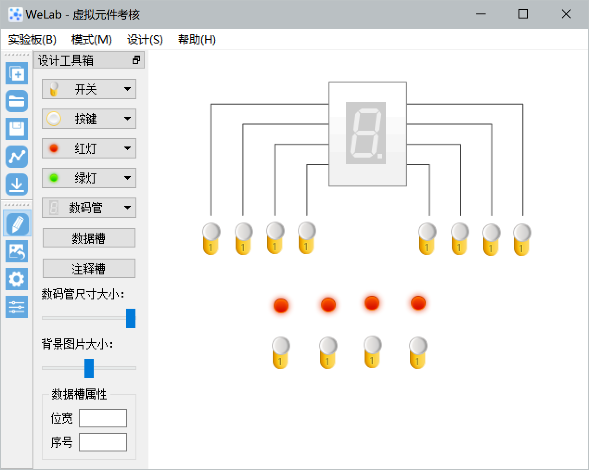
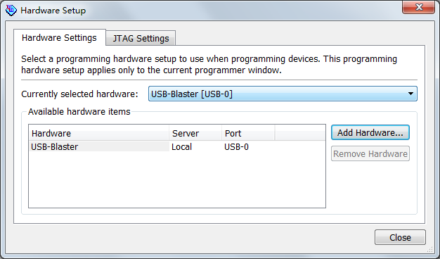

FPGA验证流程（本地实验版）
实验设备
实验调试软件：Windows版WeLab实验软件。
实验板：以下任选一种，本文举例以Pocket口袋实验板为主。
-
Pocket口袋实验板（内含调试适配器和FPGA编程器）
-
DE2-115开发板和JUPOD调试适配器
-
Nexys4 DDR开发板和JUPOD调试适配器
准备工作
实验板硬件连接
实验软件可与多种硬件实验板配套，大致分为两种类型，一种是独立的调试适配器+实验/开发板，如DE2-115；另一种是实验板内置调试适配器，如Pocket口袋板。
Pocket口袋板
Pocket口袋板和PC机通过USB电缆连接后，口袋板上的蓝色电源指示灯点亮，右侧16个红色灯和8个绿色灯也处于半亮状态。在电脑驱动尚未成功识别口袋板时，左下角的红色DATA指示灯亮；识别到口袋板后，红灯熄灭、绿色LINK指示灯点亮。电脑识别设备的时间并不确定，一般首次连接到的电脑需要的时间稍长。如果电脑尚未安装驱动程序，请参阅步骤2安装驱动程序。

图 1 Pocket口袋实验板
安装驱动程序
有两种类型的调试适配器，一种需要安装驱动程序，另一种使用Windows自带的驱动。外观上无法区分是否需要安装驱动程序，请向指导教师咨询。目前的调试适配器通常无需安装驱动程序，但是加载FPGA电路的时间稍长。
这里介绍32位Win7和WinXP的驱动程序安装，64位Windows系统（如Win10）的安装方法请自行百度。
调试适配器或内置调试适配器的实验板和PC机通过USB电缆连接后，在弹出的“安装驱动程序向导”窗口中，选择“从列表或指定位置安装”，根据提示点击“下一步”，浏览到驱动程序在软件包中的位置，根据提示点击“下一步”，即可完成JUPOD驱动程序安装。
驱动安装成功后，实验板/调试适配器的绿色指示灯会点亮，见上述“实验板硬件连接”的说明。如果绿色指示灯没有点亮，请检查Windows“设备管理器”的“通用串行总线控制器” 设备列表中是否出现“JU-POD”或“JU-HID”以及是否有感叹号。
| 关于指示灯的进一步说明：绿色指示灯一般保持常亮，表示与计算机的连接正常，但是对于使用Windows自带驱动的调试适配器，在大部分win10系统下，几秒钟后绿色指示灯会自动熄灭，当操作实验软件与实验板传送数据时绿色指示灯又会自动点亮，这是正常现象。红色指示灯仅在有数据传输时闪烁。 |
实验验证流程
打开虚拟实验板
启动WeLab软件后，点击“打开虚拟面板”菜单项或工具条按钮，在打开的文件对话框中选择实验材料中虚拟实验板.jvp，打开后界面如图 4，这个虚拟面板以实验板的实物照片为背景，在开关、指示灯等输入输出元件位置上放置了虚拟元件。
将鼠标指针指向某个虚拟元件，会提示该元件的名称和序号，如最右边的开关提示“开关0”，这些虚拟元件的名称与设计模块端口名称相对应。如“开关7”～“开关0”，与Verilog代码中的S[7:0]对应；同样，虚拟面板中序号为“0”的数码管与代码中的“SD0”对应。

图 4 DE2-115虚拟面板
与调试适配器建立连接
点击“调试适配器”菜单项或工具条按钮，在弹出窗口中应已经列出发现的调试适配器，如图 5，点击“连接”按钮。若列表中未出现调试适配器，请检查实验板与计算机的连接。

图 5 连接调试适配器
设计虚拟面板
下面从头设计一个全新的虚拟面板。点击“实验板—>新建虚拟面板”菜单项或工具条按钮，输入虚拟面板名称“认识虚拟元件”；点击“设计—>添加更换背景图”菜单项或工具条按钮，实验材料中提供了一个“虚拟面板背景图.jpg”文件，选择该图片作为虚拟面板背景图，如图 6。

图 6 七段数码管实验虚拟面板
现在我们给虚拟面板添加虚拟元件。以虚拟开关为例，在设计工具箱中点击“开关”，点击“开关0”，将它们添加到虚拟面板上，然后将它拖到所希望的位置。用类似的方法添加需要的开关、数码管和指示灯。最终完成虚拟面板效果如图 7。点击“保存虚拟面板”菜单或工具按钮将面板设计保存到文件。
上面介绍的是从空白开始设计一个全新的虚拟面板，实际上已有虚拟面板也可以修改，只要点击“模式—>虚拟面板设计”菜单项或笔形工具按钮，进入设计状态即可修改虚拟面板。

图 7
完成虚拟面板设计后，点击“模式—>虚拟面板设计”菜单项或工具按钮，从设计模式转换为实验模式。拨动虚拟开关，观察数码管和指示灯显示是否正确。如果不正确，检查verilog设计是否存在错误，改正错误后重新验证。
附：使用Quartus软件下载sof文件
DE2-115使用Quartus软件通过JTAG接口下载sof文件。
点击工具栏按钮，或使用菜单项Tool→Programmer进入器件编程话框，如图 8。

图 8 器件编程
单击按钮，选择USB-Blaster作为编程硬件，如图 9。

图 9 下载电缆设置
回到图 8编程界面，在Mode中选择编程模式，使用JTAG模式。勾选Program/Configure选项框，单击按钮开始器件编程。在Process进度条中会显示编程进度。
完成后，在QuartusII的信息显示区中，会报告成功或出错信息；注意：信息显示在QuartusII主界面的信息显示区中，不在编程窗口中；为了方便看到提示信息，可以从Window菜单执行Attach Window，将编程窗口嵌入到QuartusII主界面中。
编程界面左侧的其它按钮分别表示停止编程；自动检测编程硬件是否连接；删除编程文件；更改选中的编程文件；保存文件；添加用户自定义的器件；更改编程文件的顺序。